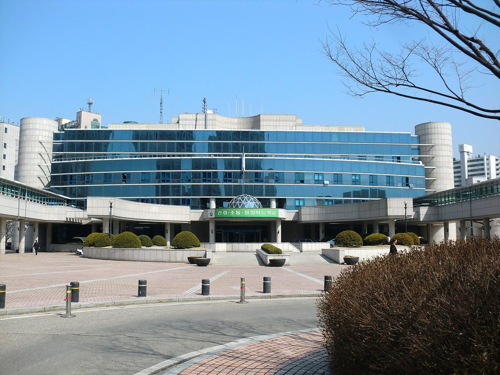

동서울변전소 HVDC 변환소 증설 주민협의체 연장…16차례 논의에도 결론 못 내

두 달 운영 예정이던 협의체 기간 넘겨 추가 회의…하남시·주민 "전자파 우려, 사업지 옮겨야", 전력당국 "옮기면 사업 기간 늘어" 신중
기후에너지환경부가 3일 저녁 경기 하남시 주민들과 동서울변전소 증설 협의체 회의를 열었으나, 16차례 논의에도 입장 차가 좁혀지지 않아 협의체를 연장해 몇 차례 더 회의를 열기로 했다. 한국전력은 변전소의 옥외 설비를 새 건물 안으로 옮기는 옥내화 공사를 진행하고 있지만, 그 부지에 HVDC(초고압직류송전) 변환소를 증설하는 사업은 하남시와 주민들이 전자파 등을 우려해 사업지 이전을 요구하면서 사실상 멈춰 있다. 협의체는 8월 20일 첫 회의를 열고 두 달 동안 운영할 예정이었으며, 전력당국은 사업지를 옮기면 사업 기간이 길어질 수 있다며 이전에 신중한 입장이다. 동서울변전소는 동해안에서 생산한 전력을 수도권으로 끌어오는 관문 역할을 한다.
시민에너지 관점
독일은 2015년 법을 고쳐 남북을 잇는 새 초고압직류 송전선을 원칙적으로 땅속에 묻도록 했는데, 철탑을 둘러싼 주민 반발이 거세자 비용이 더 들더라도 설계를 바꾼 것이다. 설계를 바꾸거나 시간을 더 들이면 수도권 전력 공급이 늦어진다는 걱정도 있지만, 16번의 회의에도 결론이 나지 않았다는 것은 주민이 결정에 참여하는 주체가 아니라 설득 대상에 머물러 있었기 때문으로 보인다. 먼 바닷가에서 만든 전기를 수도권으로 끌어오는 구조가 갈등의 뿌리인 만큼, 수도권 안에서 시민이 소유한 태양광과 지역 발전을 늘려 망 부담을 나누는 것이 근본 해법이다. 기후부와 한전은 전자파 측정 자료와 대안 부지 검토 결과를 주민과 함께 검증하는 공개 절차부터 협의체에 두어야 한다.
출처: 뉴시스 2026-11-04 손차민 원문 보기
東ソウル変電所のHVDC変換所増設をめぐる住民協議体を延長…16回の話し合いでも結論出ず
2カ月の予定だった協議体の期間を過ぎて追加会議へ…河南市・住民「電磁波が心配、事業地を移すべき」、電力当局「移せば事業期間が延びる」と慎重
韓国の気候エネルギー環境部は3日夜、京畿道河南（ハナム）市の住民と東ソウル変電所の増設をめぐる協議体の会議を開いたが、16回の話し合いを経ても立場の違いが縮まらず、協議体を延長してさらに数回会議を開くことにした。韓国電力公社は変電所の屋外設備を新しい建物の中に移す屋内化工事を進めているが、その敷地にHVDC（高圧直流送電）変換所を増設する事業は、河南市と住民が電磁波などを懸念して事業地の移転を求めているため事実上止まっている。協議体は8月20日に初会合を開き、2カ月間運営する予定だったが、電力当局は事業地を移せば事業期間が延びかねないとして移転に慎重な立場だ。東ソウル変電所は、東海岸で発電した電力を首都圏に引き込む玄関口の役割を担っている。
市民エネルギーの視点
ドイツは2015年に法律を改め、南北を結ぶ新しい高圧直流送電線を原則として地中に埋設することにした。鉄塔をめぐる住民の反発が強まると、費用が余計にかかっても設計を変えたのだ。設計を変えたり時間をかけたりすれば首都圏への電力供給が遅れるとの懸念もあるが、16回の会議でも結論が出なかったのは、住民が決定に加わる主体ではなく説得の対象にとどまっていたためとみられる。遠い海岸部で作った電気を首都圏へ引き込む構造が対立の根にある以上、首都圏の中で市民が所有する太陽光と地域の発電を増やし、送電網の負担を分け合うことが根本的な解決策だ。気候部と韓国電力は、電磁波の測定データと代替地の検討結果を住民と共に検証する公開の手続きを、まず協議体に設けるべきだ。
出典: ニューシス 2026-11-04 ソン・チャミン 原文を読む
东首尔变电站HVDC换流站扩建居民协商机构延期…讨论16次仍无结论
原定运行两个月的协商机构超期后继续开会…河南市和居民担心电磁辐射、要求迁址，电力当局称迁址将拉长工期、态度谨慎
韩国气候能源环境部3日晚与京畿道河南市居民召开东首尔变电站扩建协商机构会议，但经过16次讨论双方分歧仍未缩小，决定延长协商机构运行时间，再召开几次会议。韩国电力公社正在进行把变电站户外设备迁入新建建筑内的室内化工程，但在该场地扩建HVDC（高压直流输电）换流站的项目，因河南市和居民担心电磁辐射等问题而要求迁址，实际上已陷入停滞。协商机构于8月20日召开首次会议，原定运行两个月；电力当局认为迁址可能拉长工期，对迁址持谨慎态度。东首尔变电站承担着把东海岸发出的电力输往首都圈的门户作用。
市民能源视角
德国2015年修法，规定连接南北的新建高压直流输电线原则上采用地下电缆。在围绕输电铁塔的居民反对声浪高涨之后，德国宁愿多花成本也改变了设计。有人担心改变设计或多花时间会延误首都圈供电，但开了16次会仍无结论，看来是因为居民一直只是被说服的对象，而不是参与决策的主体。既然把遥远海岸发出的电力输往首都圈的结构是冲突的根源，那么在首都圈内部增加市民拥有的太阳能和本地发电、分担电网负担才是根本出路。气候部和韩国电力应首先在协商机构中设立与居民共同核实电磁辐射测量数据和替代场址审查结果的公开程序。
来源: 纽西斯通讯社 2026-11-04 Son Cha-min 查看原文
Residents' council on HVDC converter expansion at Dongseoul substation extended after 16 rounds of talks bring no conclusion
The council, meant to run for two months, will hold more meetings; Hanam city and residents want the site moved over electromagnetic-field concerns, while power authorities are wary that relocation would lengthen the project
The Ministry of Climate, Energy and Environment met residents of Hanam, Gyeonggi Province, on the evening of Nov. 3 in the council on expanding the Dongseoul substation, but with the two sides' positions still apart after 16 rounds of discussion, it decided to extend the council and hold several more meetings. Korea Electric Power Corp. (KEPCO) is moving the substation's outdoor equipment into a new building, but its plan to add an HVDC (high-voltage direct current) converter station on the freed-up land has effectively stalled because Hanam city and residents, worried about electromagnetic fields and other effects, are demanding that the project be relocated. The council held its first meeting on Aug. 20 and was meant to run for two months, and power authorities remain cautious about relocation, saying it could lengthen the project. The Dongseoul substation serves as the gateway bringing power generated on the east coast into the Seoul metropolitan area.
Citizen Energy View
In 2015 Germany changed its law so that new high-voltage direct current lines linking the north and south would in principle be laid underground, altering the design despite the extra cost after strong local opposition to overhead pylons. Some worry that changing designs or taking more time will delay power supply to the capital region, but the failure to reach a conclusion after 16 meetings suggests that residents have been treated as people to be persuaded rather than as participants in the decision. Since the root of the conflict is a system that hauls power from distant coasts into the capital region, the lasting answer is to share the load on the grid by expanding citizen-owned solar and local generation within the region itself. The ministry and KEPCO should start by giving the council an open process in which residents jointly verify electromagnetic-field measurements and the review of alternative sites.
Source: Newsis 2026-11-04 Son Cha-min Read the original